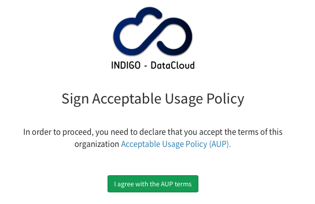
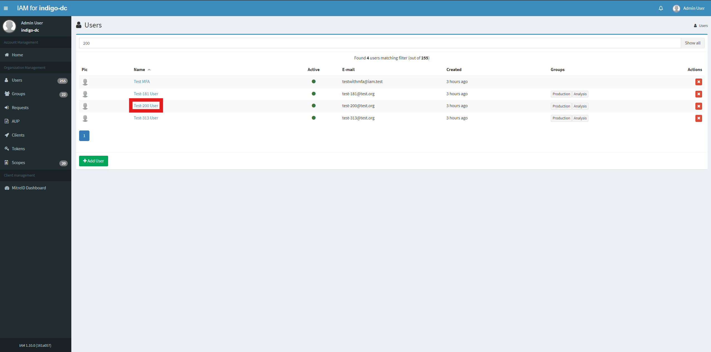

This is the multi-page printable view of this section. Click here to print.
IAM organization administration
- 1: User management
- 2: Disable or Enable a client
- 3: Group Management
- 4: Acceptable Usage Policy (AUP) management
1 - User management
IAM provides tools to manage users in an organization. All the actions described below require administrator privileges.
Creating a user account
A new user account in the organization can be created from the “Users” management panel by clicking on the “Add user” button at the bottom of the page:
A dialog is shown that allows to set basic user information:
Deleting a user account
User accounts can be deleted from the “Users management” section of the dashboard by clicking on the delete button for the users that should be deleted:
Disabling a user account
User accounts can be disabled from the user home page by clicking on the “Disable user” button. Disabled users are not allowed to login in the IAM and, as such, cannot authenticate at any services that rely on the IAM for authentication and authorization.
Managing user account privileges
Administrator privileges can be assigned to a user from the user home page by clickin on the “Assign administrator privileges” button:
Managing external user account identities
Administrators can manually add and remove external accounts and certificates for a local user account from the user home page:
2 - Disable or Enable a client
Existing clients can be disabled or enabled by Administrator from dashboard.
Disabling a client using the dashboard
Log into the service using admin credentials and click on the Clients link on the left navigation bar:
From the Clients link, select Any client you want to disable, for example Test Client:
To disable the client click on Disable Client button on the bottom of the page:
To confirm your choice click on Disable Client button on the modal window:
On success you will get a confirmation message and the Disable Client button will change to Restore Client:
Using Restore Client button client status can be changed back to Active.
3 - Group Management
IAM provides a group management system, that can be used by IAM Administrators and Group Managers to create groups, remove existing ones and manage membership in the group.
Groups can be organized in a hierarchical structure, with the following constraints:
- a group can have only a parent group;
- a group can have many childrens.
Manage groups as IAM Admin
The simplest way to manage groups is using the IAM dashboard.
Creating a group
From the home page, open the Groups section and click the Add Root Group button:

To create a group, specify a group name.

A new children group can be created from the parent group details page, clicking on the Add a subgroup button of the Subgroups upper tab.

Deleting a group
From the groups list page, click on the corresponding X button. A confirmation window will be opened, so you can confirm or abort the the delete operation.

Only empty groups can be removed. If you try to remove a group with a child group or with user members, the operation is aborted.
Managing membership for a group
To add a user to a group open the user details page. In the Groups section, click on the Add to group button:
Choose one or more groups and confirm the operation:

Starting with version 1.7.0, when a user is added as member of the children group A/B, IAM
takes care of adding them also to the parent group A that
they are not already a members of. In previous versions this had to be done
manually by the IAM administrator. Following the same rationale, when a user is
removed from the parent group A, it is also automatically removed from any children groups
(e.g. A/B) they are members of.
To remove a user from a group, click the Remove button.
Members can also be removed from the group details page, clicking on the corresponding X button as shown in the following screenshot:
Assign Group Manager privileges
Group Managers are IAM users with privileges that allow to manage groups.
In order to assign Group Manager privileges to a user, you can select the group, click on the Managers tab and then on Assign group manager. A popup window will appear to search for IAM users: after selecting the corresponding user that wants to became Group Manager, click on Add group manager.

Manage groups as Group Manager
Starting from IAM version 1.8.1, when a user is a Group Manager a left tab Managed groups that lists the groups they are group managers of appears in the homepage.

Once the Group Manager clicks on a group, what they can see in the upper tabs is
- detailed view of group information (Group information)
- list of children groups, if any (Subgroups)
- list of Group Managers (Managers)
- list of group members, if any (Members)

The Group Manager has also the possibility to click on group members, where a limited view of user information (including name, surname, uuid, username, email, status, created, updated, end time and labels) is shown.
Group Manager actions
A Group Manager in IAM does not have the same privileges as the IAM Admin in managing groups.
What they can do, beside being allowed to browse into the group details, is
- approve/reject membership requests
- delete users from their managed groups.
4 - Acceptable Usage Policy (AUP) management
Starting with version 1.2.0, IAM supports defining an Acceptable Usage Policy Document (AUP) for a managed organization. The AUP is presented to applicants at registration time or periodically.
Managing the AUP
The AUP can be managed from the “AUP” section in the IAM dashboard, or via the AUP management API.
Administrator privileges are required.
Creating the AUP
By default, the AUP is not defined for an organization, i.e. it must be explicitly defined by an IAM administrator.
The AUP can be created by clicking on the “Create AUP” button in the AUP management page (that can be reached clicking the “AUP” link in the organization Management navigation bar):

A dialog is shown:

where the administrator can enter the AUP URL and define how frequently the AUP should be accepted by users.
If the AUP signature validity is set to 0, a signature on the AUP will be requested only once (either at registration time or at the first IAM login after the AUP creation). A zero value means basically that the AUP signature does not expire.
A positive value in the AUP signature validity means, on the other hand, that the signature will expire after that number of days. As an example, an administrator that wants the AUP to signed each year by users should put 365 in the “AUP signature validity” field.
Editing and deleting the AUP
The AUP can be edited and deleted from the AUP management page:

Since version 1.6.0, the AUP has been converted from text to a URL. If you have just upgraded to 1.6.0 and you have already defined a text AUP, you should see the following red message below your AUP:
By clicking on “Edit AUP”, admins are prompted to insert a valid URL.

As shown in the picture above, editing the AUP will not trigger an AUP signature request.
Request a signature from users
If you want to request a signature from users for the updated AUP, use the “Request AUP signature” button in the AUP management page.
A dialog is shown:

Confirm by clicking on “Request AUP signature” and the acceptance of the AUP will be requested from ALL users at their next login.
Signing the AUP
Once defined the AUP text is shown to users for acceptance either at registration time:
or at the first login after the AUP creation:
Request AUP signature
Administrator can request user to sign AUP.
Administrator privileges are required.
Log into the service using admin credentials and click on the Users link on the left navigation bar:

From the Users link, select Any user you want to request AUP signature, for example Test-200 User:

To request AUP signature click on Request AUP signature button on User details section on the left of the page:

To confirm your choice click on Request AUP signature button on the modal window:

On success you will get a confirmation message:
After this operation, if the user logs in, they must sign the AUP again before accessing the service.
Sign AUP on behalf of the user
Administrator can sign AUP on behalf of the user.
Log into the service using admin credentials and click on the Users link on the left navigation bar:
From the Users link, select Any user you want to sign AUP on behalf, for example Test-200 User:
To sign AUP on behalf of the user click on Sign AUP on behalf of this user button on User details section on the left of the page:
To confirm your choice click on Sign AUP button on the modal window:

On success you will get a confirmation message: